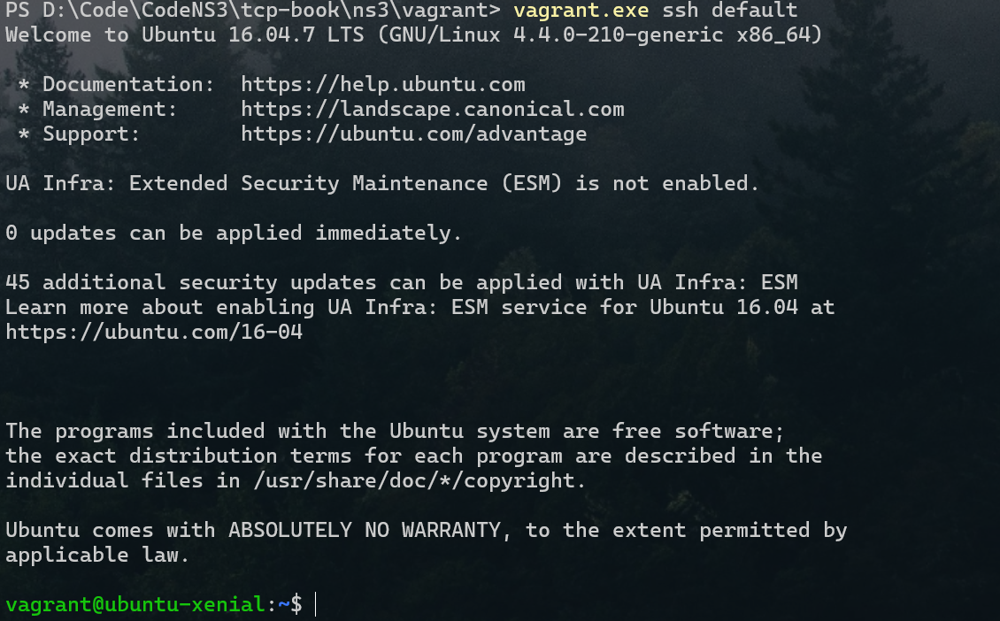

TCP学习-NS3模拟环境搭建
参考https://github.com/ituring/tcp-book/?tab=readme-ov-file
前置工具下载
virtualBox（最新版本即可）
https://www.virtualbox.org/ 1
2
3VirtualBox 图形用户界面
版本 7.0.22 r165102 (Qt5.15.2)
Copyright © 2024 Oracle and/or its affiliates
Vagrant（最新版本即可）
https://developer.hashicorp.com/vagrant 1
2PS C:\Users\dushenda> vagrant.exe -v
Vagrant 2.4.9
Powershell
https://learn.microsoft.com/en-us/powershell/scripting/install/install-powershell-on-windows?view=powershell-7.5 1
2PS C:\Users\dushenda> pwsh.exe -v
PowerShell 7.1.4
X server
下载并安装 VcXsrv：
- 访问：https://sourceforge.net/projects/vcxsrv/
- 下载并安装 VcXsrv Windows X Server
配置 VcXsrv：
- 启动 “XLaunch”
- 选择 “Multiple windows”
- Display number 设为 “0” 或 “-1”（自动）
- 选择 “Start no client”
- 在 “Extra settings” 中勾选 “Disable access control”（重要！）
- 完成设置，VcXsrv 会在系统托盘运行
设置 PowerShell 环境变量
1 | 在启动 Vagrant 前设置 DISPLAY |
修改 Vagrantfile 配置
1 | Vagrant.configure("2") do |config| |
安装wireshark虚拟机
配置环境
1 | git clone https://github.com/ituring/tcp-book.git |
登录虚拟机
使用以下的命令，ssh连接到Guest操作系统上。在登录消息显示之后，命令行提示会变成vagrant@guest1:~$。
在powershell中运行vagrant ssh guest1。
1 | vagrant ssh guest1 |
启动Wireshark。 1
vagrant@guest1:~$ wireshark

安装ns3虚拟机
当确认已经准备好VirtualBox和Vagrant的环境之后，请将此Github代码库克隆到任意目录。打开其中的ns3/vagrant目录，执行vagrant up命令。如此一来，就在虚拟机上完成了安装Ubuntu 16.04，并搭建ns-3的过程。另外，在2019年4月1日的时间点，第5章和第6章所使用的CUBIC和BBR模块不支持ns-3.28以上版本，因此本书使用ns-3.27版本。由于搭建ns-3环境相当花时间，请务必耐心等待 。
1 | git clone https://github.com/ituring/tcp-book.git |
 在
在powershell中运行vagrant ssh 